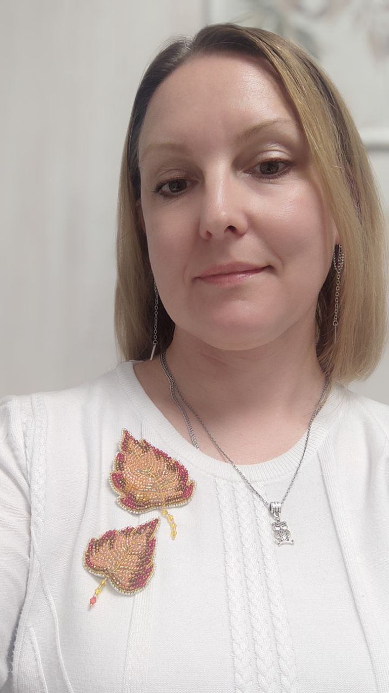

Приветствую посетителей нашего удивительного магазина рукоделия "СветЛуны"! Меня зовут Светлана Белова, и я - мастер, который создаёт все эти чудесные игрушки и множество других удивительных вещей для нашего магазина.
Давайте начнем с того, что я родилась 5 января 1980 годав красивом городе Тверь.  С самого детства меня привлекал театр, и, возможно, это вдохновило меня выбрать путь, который я сейчас прохожу.
Мое образование началось в Тверском колледже культуры имени Н. А. Львова, где я изучала режиссерское искусство. Однако, даже тогда я понимала, что моя дорога лежит не в актерстве или режиссуре. Судьбоносное предложение работы в бутафорском цехе ТЮЗа изменило всё.
С того времени прошло уже 19 лет, и я с гордостью возглавляю бутафорский цех. Здесь мне посчастливилось воплотить в жизнь множество театральных идей. Мой первый спектакль – «Трехгрошовая опера» – был настоящим вызовом. Простые декорации и вмешательство в процесс монтажа привели меня к созданию первых игровых реквизитов.
Я училась у опытных мастеров, наблюдая, как создаются игрушки и декорации. Меня увлекли техники работы с глиной, папье-маше и другими материалами. Постоянные вызовы в виде новых спектаклей приводили к созданию разнообразных объектов – от масок и абажуров до мечей и кубков.
Каждая игрушка или декорация – это для меня не просто работа, но и возможность воплотить что-то уникальное. Надеюсь, вы наслаждаетесь нашими творениями так же, как и я наслаждаюсь процессом их создания.